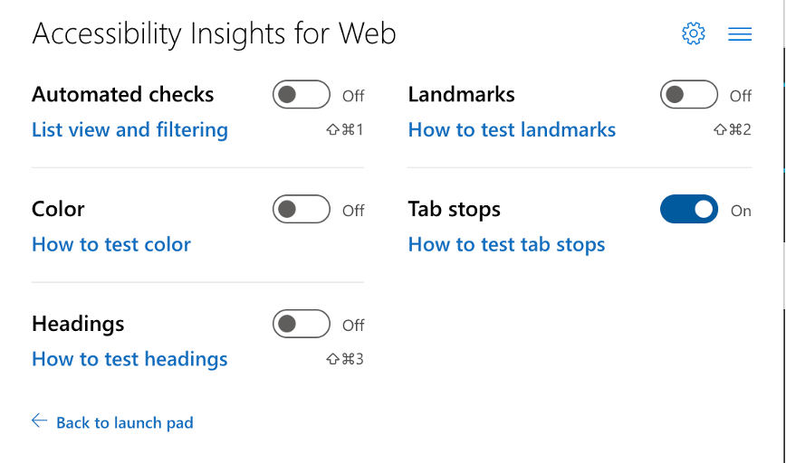
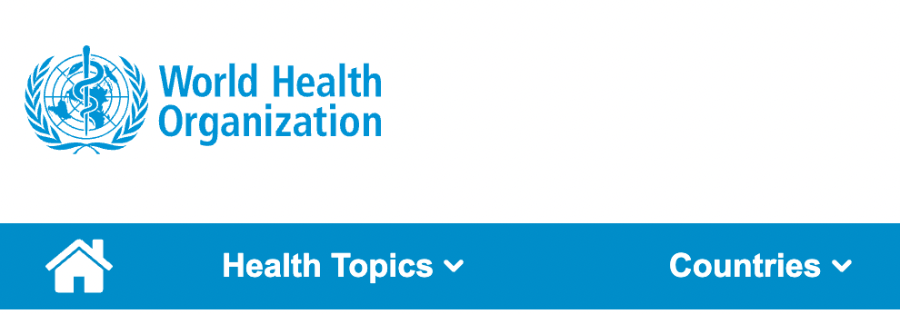
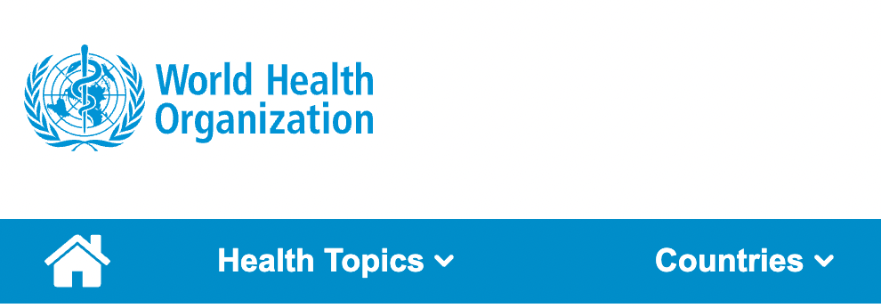

Slide instructions
SPACEBAR to move forward through slides.
SHIFT & SPACEBAR to move backwards through slides.
LEFT ARROW & RIGHT ARROW to move through sections.
ESC to see overview and ESC again to exit.
F to enter presentation mode and ESC to exit.
Session 1
Testing for Accessibility
What you will need
Download at: bit.ly/
Intros
- Name & Role
- Something you're most awesome at
- What you hope to get out of this training
Part 1 - Testing types, toolkit, keyboard and focus

Overview
- Testing toolkit
- Keyboard accessibilty
- Focus order
- Focus indication
Types of testing
1. Automated testing

Automated desktop tools
Axe by Deque

ANDI tool
ARC toolkit
WAVE tool
Microsoft Accessibility Insights

Guided Assessment

Adhoc tools

Automated mobile tools
Android Accessibility Scanner

- Content labels
- Touch target size
- Clickable items
- Text and image contrast
Axe for Android
- Control Labeling
- Image Labeling
- Touch target size
- Focus management
- Color Contrast Analysis
Android Studio - Lint
iOS Accessibility Inspector
Exercise 1
Automated testing with Microsoft Accessibility Insights
- Type: Individual
- Time: 5 mins
Instructions
- Run MS Insights over your organisation/product homepage
- Post in chat how many overall automated issues are detected
- Use the visual helper tool to inspect individual issues on the page
- Familiarise yourselves with the interface and features
2. Assistive Technology testing
Screen Readers
Desktop
- JAWS for Windows (licensed)
- NVDA for Windows
- VoiceOver for MacOS
Mobile
- TalkBack (Android)
- VoiceOver for iOS (Apple)
Speech Interfaces
Desktop
- Dragon NaturallySpeaking (licensed)
- Voice Control (Mac OS)
Mobile
- Voice Access (Android)
- Voice Control (iOS)
3. Manual testing
Keyboard
Assistance tools
Colour and contrast tools
4. Usability testing
Usability testing
- WCAG accessibility testing does not always measure human impact and barriers.
- Involve testing with people with disabilities to see real world impacts and insights
Keyboard access
Keyboard interaction
- As a: screen reader user or user with limited mobility,
- I want: to be able to complete all tasks using a keyboard,
- So that: I can interact with a website in the way I want

2.1.1 Keyboard (A)
All functionality of the content is operable through a keyboard interface ...
Manual test | Keyboard
2.1.2 Keyboard Trap (A)
Focus can be moved to and away from a component using only a keyboard interface ...
Manual test | Keyboard
Keyboard interaction patterns: Native
Part 1
| Interaction | Keystroke |
|---|---|
| Focusable elements |
Tab: Moves focus to next focusable element Shift + Tab: Moves focus to previous focusable element |
| Link | Enter: Activates the link and opens target |
| Button | Enter or Space: Activates the button |
| Checkbox | Space: Changes the checked/unchecked state of the checkbox |
| Select (dropdown) |
Up Arrow and Down Arrow: navigate between options Space: Expands dropdown to view all options |
Part 2
| Interaction | Keystroke |
|---|---|
| Radio button |
Tab: Moves focus into radio button group Space: Checks the focused radio button Up Arrow and Down Arrow: move focus to the next radio button in the group and unchecks the previously focused radio button and checks the newly focused button. If focus is on the last button, moves to the first button. Right Arrow and Left Arrow for horizontal radio buttons. Space: Checks the focused radio button if not already checked |
Checklist for Keyboard
| Criteria | Details | |
|---|---|---|
| 2.1.1 Keyboard | ||
| 2.1.2 Keyboard Trap |
Exercise 2
Keyboard only challenge
- Type: Individual
- Time: 5 mins
Instructions
- Open up your organisation/product homepage
- Using standard keyboard interactions Tab and Shift + Tab try to navigate the page
- Note any elements you can't access and post in the chat as follows:
- 2.1.1 Keyboard: (Describe element)
- 2.1.2 Keyboard trap: (Describe element)
Focus Order and Indication
Focus order
Logical order
- As a: screen reader user or keyboard user,
- I want: focus order to be logical and intuitive
- So that: I can understand and interact with the content, regardless of what method I use
2.4.3 Focus Order (A)
Focusable components receive focus in an order that preserves meaning and operability.
Semi-automated test | Accessibility Insights > Tab stops
Checklist for Focus order
| Criteria | Details | |
|---|---|---|
| 2.4.3 Focus order |
Focus order testing tools demo
Microsoft Insights > Tab stops
Focus indication
Focus indicators
- As a: keyboard user
- I need: a clearly visible indicator when a UI component has focus
- So that: I know which component I tabbed to
2.4.7 Focus Visible (AA)
Any keyboard operable user interface has a mode of operation where the keyboard focus indicator is visible.
Manual test | Keyboard | Visual check
1.4.1 Use of color (A)
Color is not used as the only visual means of conveying information
Manual test | Keyboard | Visual check
1.4.11 Non-Text Contrast (AA)
Visual information required to identify states have a contrast ratio of at least 3:1 against adjacent color(s)
Manual test | Keyboard | Colour contrast analyser
Good focus indication examples


Bad focus indication examples
 

Checklist for Focus Indication
| Criteria | Details | |
|---|---|---|
| 2.4.7 Focus visible | ||
| 1.4.1 Focus by color alone | ||
| 1.4.11 Focus contrast |
How to test focus state contrast

- Enable the Focus checkbox in the dev tools styles panel to identify the focus style colour.
- Use the Colour contrast analyser or Tanaguru contrast finder to test contrast against the background.
Exercise 3
Focus order and indication testing
- Type: Individual
- Time: 5 mins
Instructions
- Open up your organisation/product homepage
- Using Microsoft Insights > Adhoc tools > Tab stops test the page for logical Focus order
- Tab through the interactive elements on the page to test if there is a clear visible focus indicator.
- Post in the chat any failures you find as follows:
- 2.4.3 Focus order (describe element)
- 2.4.7 Focus visible (describe element)
Session 1 - That's a wrap!